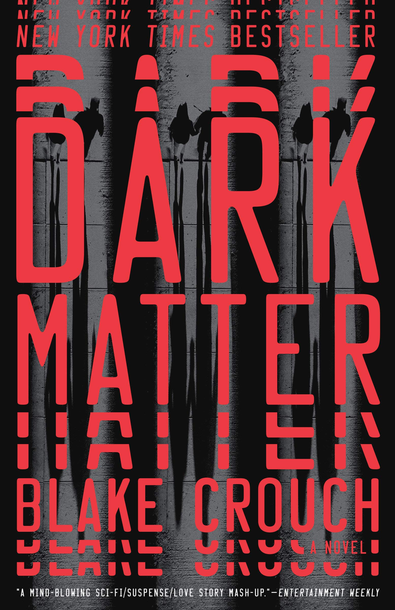

One of my favorite dystopian books. There's always enough tension in the storyline that you don't want to put it down - basically a more thriller version of "1984" with teen protagonists. It has an action based plot with plenty of twists and a sprinkle of mystery.
An original dragon and viking saga with plenty of humor and wit. It has suprising depth, and the character development is top-notch. By the end, you'll find yourself thoroughly invested in the protagonists. And yes, I think the books are better than the movies, haha.
This is one of my favorites because of how the fictional world protrayed is such a possibility in our future. It’s set in the dystopian future of 2044 – oil has run out, the climate is a wreck, and the only escape from the daily drudgery is full immersion in the hyper-realistic virtual world.
After an exploratory mission to Mars goes awry, a lone astronaut relies on wits and willpower to survive. I enjoyed it for its unique style; psychological and a bit geeky with dynamics based largely on existing technology (no aliens).
A man gets abruptly separated from his family and all that he knows. An existential journey that does a great job of combining sci-fi and reality. Even though it's fiction, it makes you think about life in a differant way. I saw the world with new eyes by the time I finished.